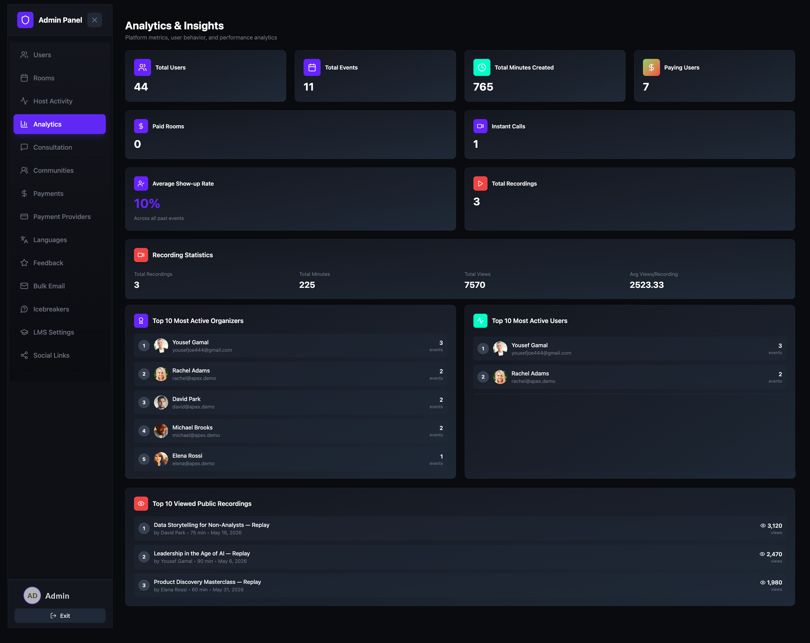
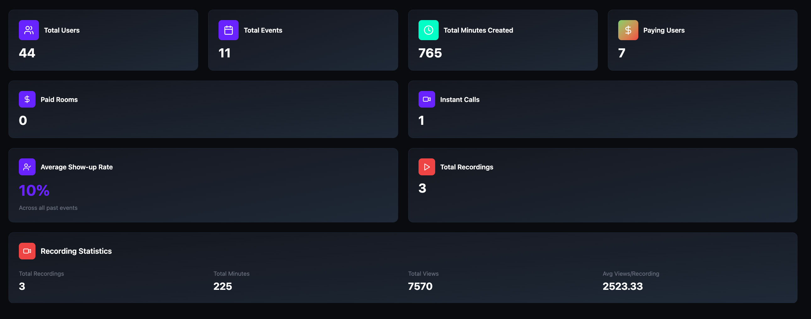
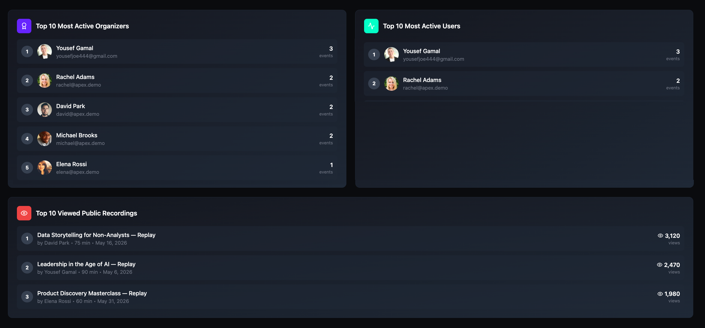

View platform analytics
Get a high-level view of platform performance including user growth, event activity, recording engagement, and top contributors — all from a single dashboard.
Open the Analytics page
- Open the Admin Panel.
- Click Analytics in the left sidebar.
The Analytics & Insights page displays platform-wide metrics, recording statistics, and leaderboards. All data is read-only and updates automatically.

Platform overview metrics
The top of the dashboard displays eight metric cards arranged in three rows:
| Metric | Description |
|---|---|
| Total Users | The total number of registered users on the platform. |
| Total Events | The total number of events (rooms) created. |
| Total Minutes Created | The cumulative scheduled duration across all events. |
| Paying Users | The number of users on a paid plan (Basic, Pro, or Enterprise). |
| Paid Rooms | The number of rooms that required a ticket or payment to join. |
| Instant Calls | The total number of instant drop-in calls started on the platform. |
| Average Show-up Rate | The percentage of events where the host actually attended, calculated across all past events. |
| Total Recordings | The number of recorded sessions available on the platform. |
Recording statistics
Below the metric cards, the Recording Statistics bar provides a focused view of recording performance with four data points:
| Metric | Description |
|---|---|
| Total Recordings | The number of recorded sessions. |
| Total Minutes | The combined duration of all recordings. |
| Total Views | The total number of times recordings have been watched. |
| Avg Views/Recording | The average number of views per recording. |

Leaderboards
The bottom of the dashboard displays three ranked leaderboards:
- Top 10 Most Active Organizers — ranks hosts by the number of events they have created. Each entry shows the host's avatar, name, email, and event count.
- Top 10 Most Active Users — ranks users by the number of events they have attended. Each entry shows the user's avatar, name, email, and event count.
- Top 10 Viewed Public Recordings — ranks recordings by total views. Each entry shows the recording title, host name, duration, date, and view count.
